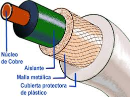
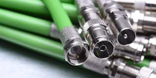

El cable coaxial es un medio de transmisión guiado que ofrece mayor protección contra interferencias que el par trenzado. Ha sido ampliamente utilizado en sistemas de televisión y redes de datos. Tanenbaum lo describe como un medio robusto y confiable.
El cable coaxial está compuesto por un conductor central, un aislante, una malla metálica y una cubierta externa, lo que permite reducir significativamente el ruido. Según Stallings, este diseño permite mayores velocidades y distancias que el par trenzado, aunque a un costo más elevado.

